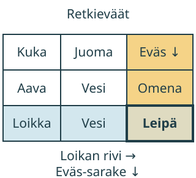

<link rel="stylesheet" href="lesson.css" />


<section data-teaching-step="1" data-lesson-role="teaching-step">
<section class="lesson-intro"><h2>Kenen eväs, mikä tieto?</h2><p>Aava ja Loikka pakkaavat retkelle. Mistä näet juuri Loikan evään?</p><p><strong>Harjoittelen etsimään tiedon rivin ja sarakkeen avulla.</strong></p></section>
</section>


<section>
<section data-teaching-step="2" data-lesson-role="teaching-step">
<h2>Kaksi listaa samassa taulukossa</h2><p>Aavan juoma on vesi ja eväs on omena. Loikan juoma on vesi ja eväs on leipä. Taulukko asettaa tiedot paikoilleen.</p><figure data-table-figure data-lesson-role="worked-example"><figcaption>Rivi kulkee sivulta toiselle →. Sarake kulkee ylhäältä alas ↓. Otsikko kertoo, mitä tietoa etsit.</figcaption></figure>
</section>


<section data-teaching-step="3" data-lesson-role="teaching-step">
<h3>Esimerkki: Loikan eväs</h3><p>Etsi vasemmalta Loikka. Seuraa hänen riviään sivulle. Etsi ylhäältä Eväs. Seuraa saraketta alas. Reitit kohtaavat ruudussa <strong>Leipä</strong>.</p>
</section>

<section data-teaching-step="4" data-lesson-role="teaching-step">
<h3>Esimerkki: oikea rivi ei yksin riitä</h3><p>Loikan rivillä on myös Vesi. Se on juoma, ei eväs. Tarkista siis molemmat otsikot. Sama sana voi olla monessa ruudussa: pelkkä sana ei kerro, kenen tieto on kyseessä.</p>
</section>

<section data-teaching-step="5" data-lesson-role="teaching-step">
<h3>Uusi tilanne: tavaroiden paikat</h3><p>Toisessa taulukossa rivit kertovat tavaran. Sarakkeet kertovat, missä se on ennen retkeä ja retken jälkeen. Etsi edelleen sekä oikea rivi että oikea sarake. Lukuja ei tarvitse laskea.</p>
</section>
</section>


<section data-teaching-step="6" data-lesson-role="teaching-step">
<section data-table-work><div data-audience-columns><div data-visual-column><h2>Kulje otsikoista tietoon</h2><p data-lesson-role="question">Ennusta: jos pysyt Loikan rivillä mutta vaihdat saraketta, saatko saman tiedon? Kokeile otsikoita.</p><p data-table-question></p><p>Valitse vasemmalta rivin otsikko ja ylhäältä sarakkeen otsikko. Voit valita kumman tahansa ensin. Paina sitten vastausruutua.</p><div data-table-surface></div></div><div data-response-column><p data-table-route aria-live="polite">Rivi ja sarake odottavat valintaa.</p><p data-table-feedback role="status" aria-live="polite">Ruudun valinta tarkistetaan. Saat vaihtaa otsikoita rauhassa.</p><p><button type="button" data-table-clear>Poista merkinnät</button> <button type="button" data-table-next>Toinen haku</button></p><details data-lesson-role="hint"><summary>Apua</summary><p>Kysy ensin: kenestä tai mistä puhutaan? Se löytyy rivin otsikosta. Mitä siitä kysytään? Se löytyy sarakkeen otsikosta. Seuraa molempia risteykseen. Aikuinen voi lukea otsikot ääneen.</p></details></div></div></section>
</section>


<section data-teaching-step="7" data-lesson-role="teaching-step">
<details data-lesson-role="teaching-step"><summary>Lisätutkimus</summary><p>Voiko sanoja Vesi olla kahdessa eri ruudussa? Kerro kummankin ruudun molemmat otsikot. Keksikää sitten oma kysymys valmiista taulukosta. Kysymykseen ei tarvitse liittää laskua.</p></details>
</section>


<details class="teacher" data-lesson-role="teacher-note"><summary>Opettajalle: rakenne, työskentely ja rajat</summary><p>Vuosiluokat 1–2. Kanoninen rooli on prosessi ja solmutyyppi representaatio. Tässä lapsi toteuttaa hakuprosessin: tulkitsee kysymyksen, merkitsee rivin ja sarakkeen sekä valitsee risteyksen. Ohjelma tarkistaa kaikki kolme valintaa. Valitut otsikot jäävät näkyviin tueksi; onnistumista ei tulkita itsenäiseksi näytöksi.</p><p>Taulukot ovat keksittyjä retkisuunnitelmia, eivät havaintoaineistoa. Harjoitus ei vaadi havaintojen keräämistä, tukkimiehen merkkejä, lukujen suuruusvertailua tai summia. Kirjan Hylly ja pelin Kori ovat tässä annettua tietoa, eivät yleisiä sääntöjä. Lue teksti lapselle tarvittaessa, mutta anna hänen osoittaa reitti.</p><p>Offline: piirrä ruutupaperille taulukko. Laita nimilaput vasempaan reunaan ja tietolaput yläreunaan. Lapsi seuraa riviä toisella sormella ja saraketta toisella. Kysy, mitä juuri risteyksen tieto tarkoittaa. Ruudun toiminta ei todenna oman taulukon laatimista, tiedonkeruuta, laskutaitoa tai pysyvää osaamista.</p></details>


<section data-teaching-step="8" data-lesson-role="teaching-step">
<section><h2>Lopuksi</h2><p>Osoita yksi ruutu. Mitkä kaksi otsikkoa kertovat, mitä sen tieto tarkoittaa? Voit näyttää reitin sormella.</p></section>
</section>


